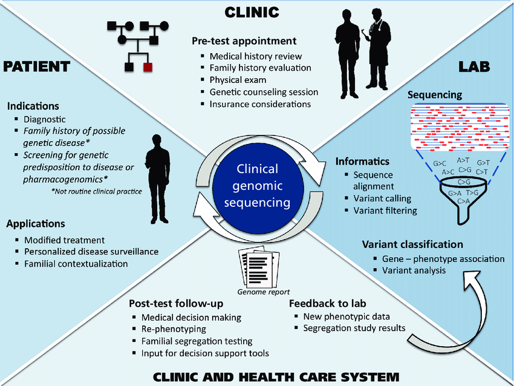
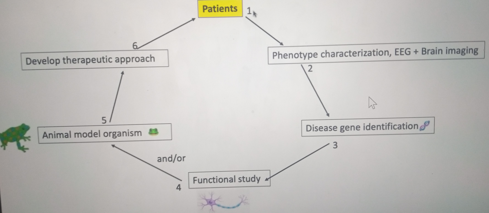

1 / 5

One
2 / 4

Two
3 / 5

Three
4 / 5

Four
5 / 5

Five
For more information see our Publications.
We are a research group dedicated to studying the genetic basis of neurological disorders. Hereditary neurological disorders are very disabling diseases that are under-studied in Africa. Our first aim is to clinically characterize these disorders in the Malian population in order to establish a comprehensive clinical description of the diseases in this region. Our second aim is to identify gene mutations related to neurological diseases, and to explore their effects in cell culture models to further our understanding of their function and interactions and our knowledge of common disease mechanisms. Our third aim is to provide training and post-training incentives for Malian physicians and students in order to maintain them locally and insure that research is current.
For more information see our Publications.